Energía Solar Fotovoltaica para Empresas e Industrias
Diseño e instalación de sistemas fotovoltaicos de autoconsumo para empresas e industrias, con acompañamiento técnico desde el diseño hasta la puesta en marcha, conforme a los lineamientos de RETIE. Cobertura en Barranquilla, Atlántico y la Región Caribe.
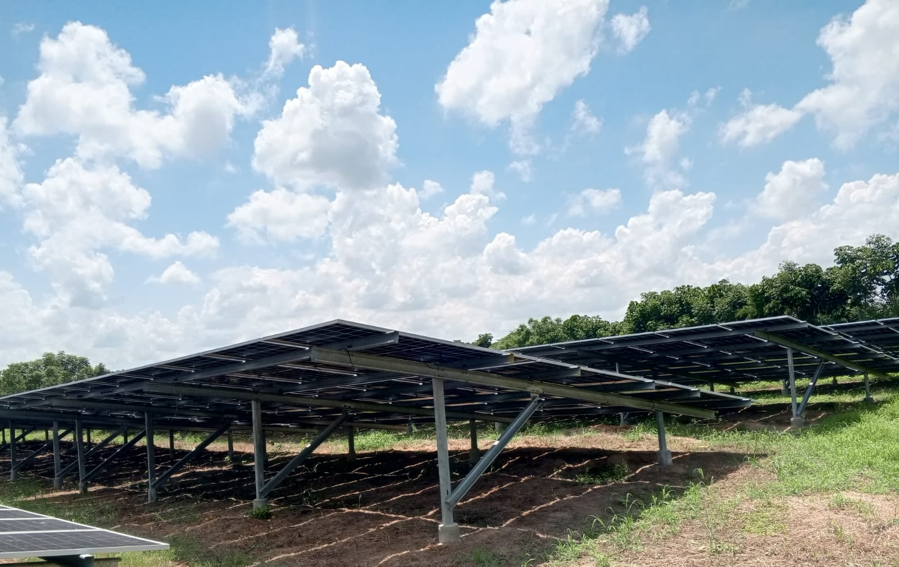
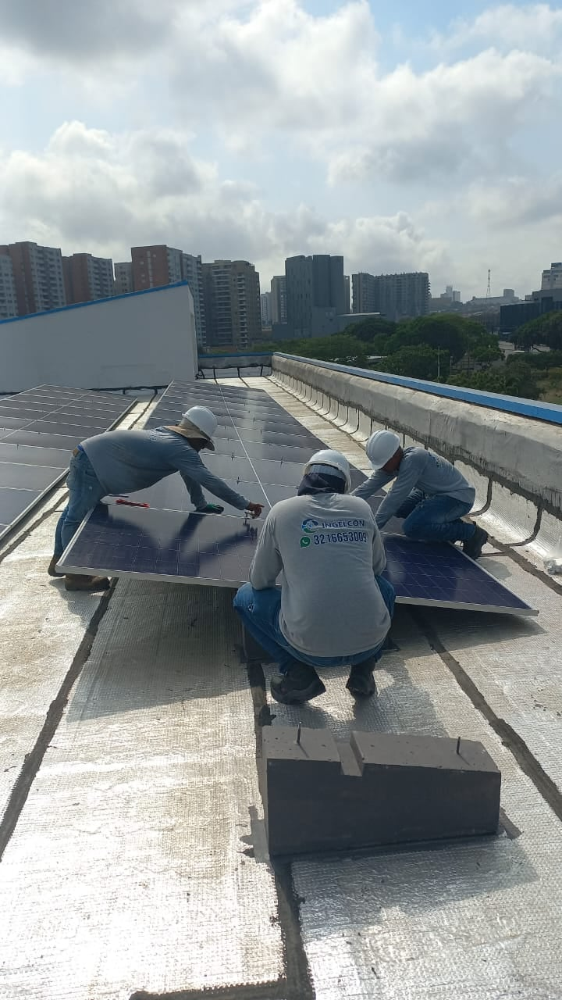
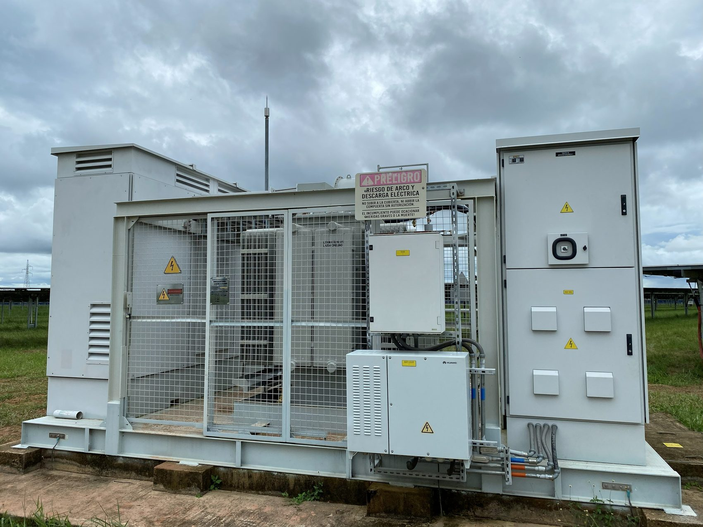
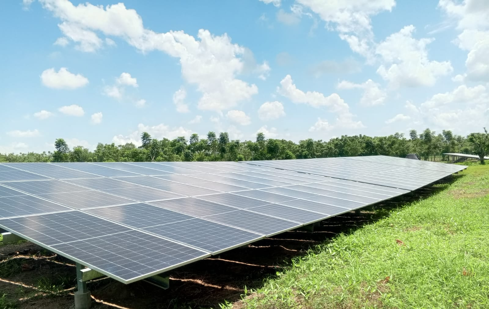
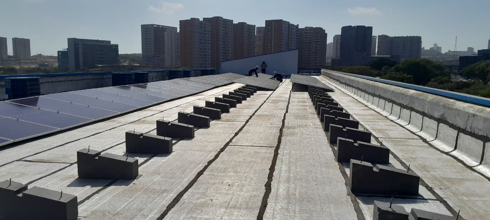
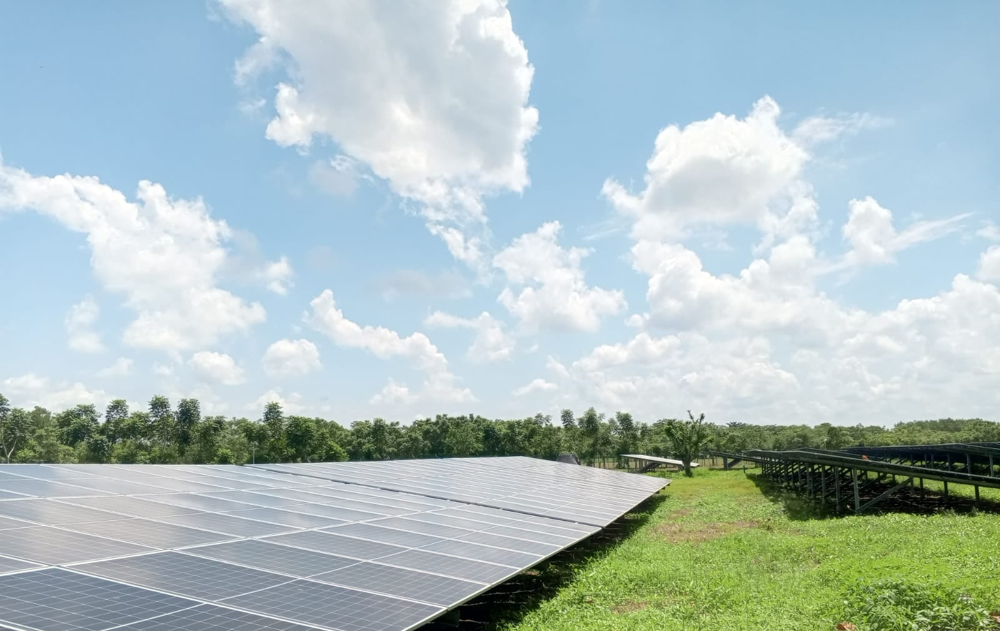
Costos de energía que una empresa puede empezar a gestionar
El costo de la energía eléctrica es uno de los gastos operativos más difíciles de reducir para una empresa. Un sistema fotovoltaico de autoconsumo, bien dimensionado para el consumo real del negocio, puede contribuir a reducir costos de energía a mediano y largo plazo.
- Costos de energía elevados en la operación de la empresa.
- Interés en autoconsumo o eficiencia energética sin saber por dónde empezar.
- Dudas sobre la viabilidad técnica o el dimensionamiento correcto para la industria.
Estudio de viabilidad con PVsyst
Utilizamos PVsyst, software de referencia en la industria fotovoltaica, para simular el comportamiento del sistema antes de instalarlo. Según el alcance contratado, la evaluación puede contemplar:
Análisis del consumo eléctrico
Revisión del perfil de consumo de la empresa como base del dimensionamiento.
Simulación de generación (PVsyst)
Modelado del comportamiento del sistema según ubicación, orientación y condiciones del sitio.
Evaluación de pérdidas energéticas
Estimación de pérdidas por sombreado, temperatura, cableado y otros factores del sistema.
Dimensionamiento de módulos e inversores
Selección de equipos según el consumo evaluado y el espacio disponible.
Estimación de generación anual
Proyección de energía generada a partir del modelo simulado — es una estimación, no un resultado garantizado.
Evaluación del autoconsumo
Análisis de qué proporción de la generación coincide con el consumo real de la empresa.
Análisis de viabilidad económica
Evaluación de la inversión requerida frente al comportamiento estimado del sistema.
Evaluación de recuperación de inversión
Estimación del plazo de recuperación según los supuestos del estudio — una proyección sujeta a las condiciones reales de operación, no una cifra garantizada.
Las simulaciones son estimaciones basadas en los datos de entrada y las condiciones modeladas. El desempeño real del sistema puede variar según las condiciones de operación; no garantizamos cifras de ahorro ni de retorno de inversión.
Servicios que ofrecemos
Trabajamos con empresas e industrias en techo, estructura o terreno disponible. El dimensionamiento se define según el consumo y el espacio de cada proyecto.
Evaluación de consumo
Revisión del consumo energético y el espacio disponible para dimensionar el sistema.
Diseño del sistema
Diseño del sistema fotovoltaico de autoconsumo según las condiciones del sitio.
Instalación
Montaje de paneles, estructura e inversores bajo protocolos de seguridad específicos para circuitos fotovoltaicos DC y AC — los módulos pueden generar tensión al recibir irradiación solar incluso estando desconectados de la red, por lo que las conexiones se realizan con los procedimientos de seguridad correspondientes a cada etapa.
Puesta en marcha
Verificación del funcionamiento del sistema antes de la entrega.
Mantenimiento posterior
Servicio contratable por separado para conservar el rendimiento del sistema a lo largo del tiempo.
Informe técnico
Alcance del proyecto, especificaciones del sistema instalado y recomendaciones.
Cómo trabajamos
Visita técnica
Revisión del consumo energético, el espacio disponible y las condiciones del sitio.
Diseño y propuesta
Dimensionamiento del sistema según el consumo real y el espacio evaluado.
Instalación
Montaje en sitio bajo protocolo técnico y condiciones de seguridad eléctrica apropiadas.
Puesta en marcha e informe
Verificación de funcionamiento y entrega de informe técnico, conforme a los lineamientos de RETIE.
Trabajo de campo
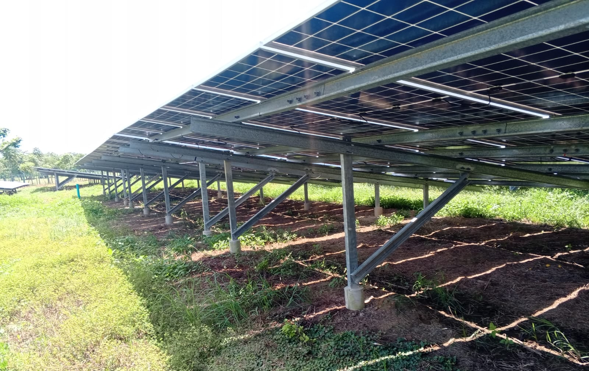
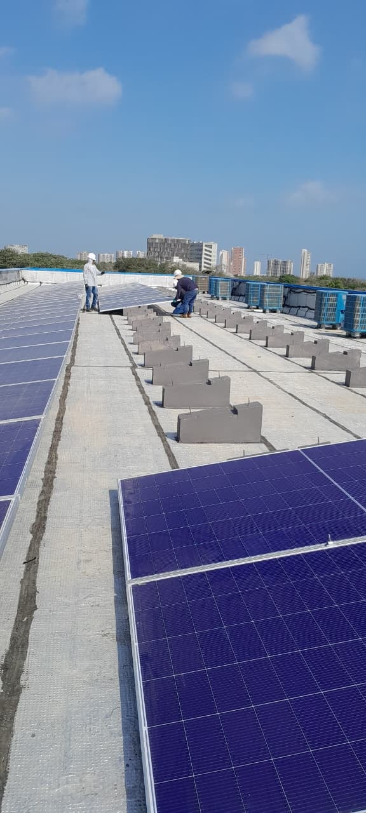
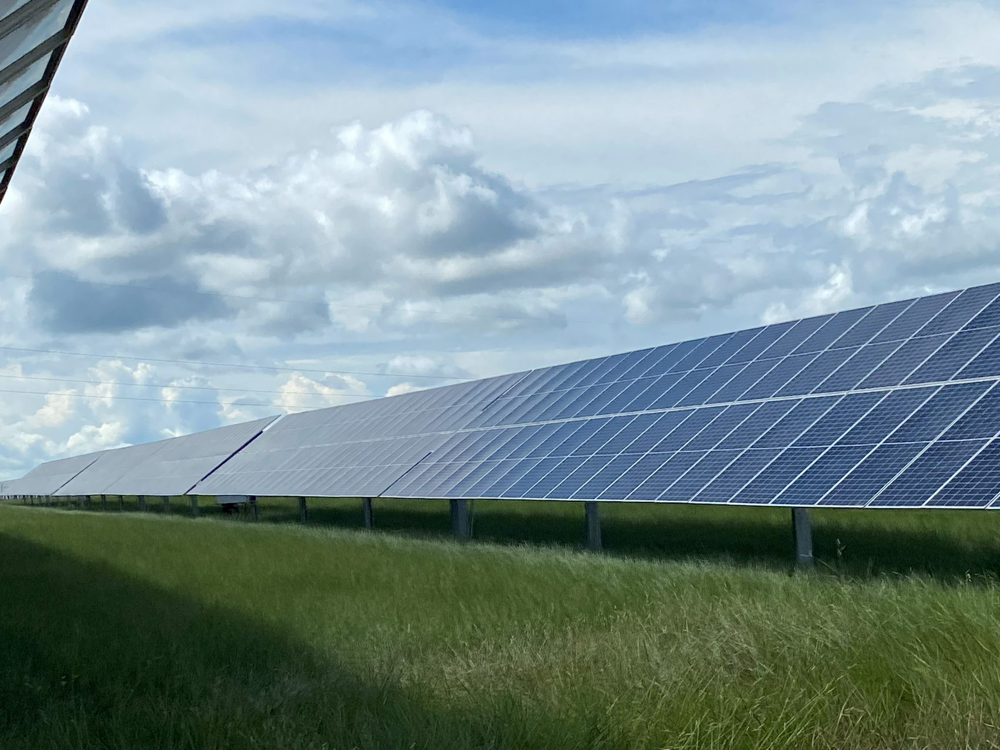
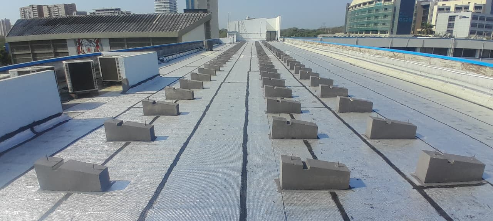
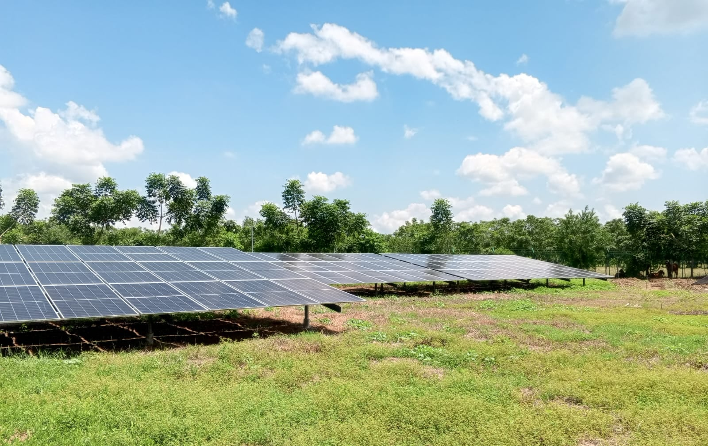
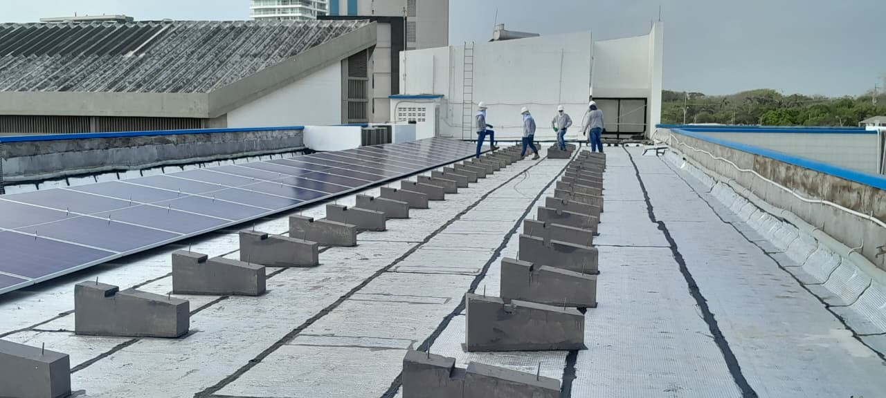
Por qué invertir en energía solar industrial
Puede contribuir a reducir costos
Un sistema bien dimensionado puede contribuir a reducir el costo de energía de la operación.
Menor exposición a alzas tarifarias
El autoconsumo reduce la dependencia de la energía comprada a la red.
Informe técnico documentado
Soporte técnico del proyecto para decisiones de gerencia o auditorías internas.
Acompañamiento técnico completo
Desde la evaluación inicial hasta la puesta en marcha, con un solo equipo técnico.
Resolvemos tus dudas
¿Cuánto puedo ahorrar con un sistema fotovoltaico industrial?
Depende del consumo energético de la empresa, el espacio disponible, la tarifa eléctrica actual y el tamaño del sistema instalado. Un sistema de autoconsumo bien dimensionado puede contribuir a reducir costos de energía, pero el ahorro específico se calcula caso por caso tras un estudio del consumo.
¿Qué incluye el servicio de diseño e instalación?
Evaluación del consumo y el espacio disponible, diseño del sistema, instalación de paneles y equipos, y puesta en marcha, conforme a los lineamientos de RETIE aplicables a instalaciones fotovoltaicas.
¿Qué es PVsyst y para qué lo usan?
PVsyst es un software de referencia en la industria fotovoltaica para simular el comportamiento de un sistema solar antes de instalarlo: generación estimada, pérdidas energéticas y dimensionamiento de equipos, entre otros factores. Es una herramienta de estimación — el desempeño real del sistema instalado puede variar según las condiciones de operación.
¿El sistema requiere mantenimiento después de instalado?
Sí. Un mantenimiento periódico ayuda a conservar el rendimiento del sistema a lo largo del tiempo. Este servicio puede contratarse por separado tras la instalación.
¿Qué tipo de empresas pueden instalar energía solar industrial?
Empresas e industrias con consumo eléctrico relevante y espacio disponible en techo o terreno — la viabilidad específica se evalúa según cada caso.
¿Cubren proyectos fuera de Barranquilla?
Sí, en el departamento del Atlántico y la región Caribe colombiana.
También puede interesarte
Energía Solar Fotovoltaica
Vista completa de nuestros servicios de energía solar.
Ver detalle →Mantenimiento Eléctrico General
Vista completa de todos nuestros servicios de mantenimiento eléctrico.
Ver detalle →Pruebas Eléctricas Especializadas
Diagnóstico eléctrico, análisis de aceite dieléctrico y termografía industrial.
Ver detalle →¿Tu empresa está evaluando energía solar?
Cuéntanos tu consumo y el espacio disponible y te orientamos sin compromiso.